Golang调度器GMP原理与调度全分析
该文章主要详细具体的介绍Goroutine调度器过程及原理，可以对Go调度器的详细调度过程有一个清晰的理解。
内容提纲
- Golang调度器的由来
- Goroutine调度器的GMP模型及设计思想
- Goroutine调度场景过程全图文解析
一、Golang调度器的由来？
单进程时代不需要调度器
我们知道，一切的软件都是跑在操作系统上，真正用来干活(计算)的是CPU。
早期的操作系统每个程序就是一个进程，直到一个程序运行完，才能进行下一个进程，就是单进程时代, 一切的程序只能串行发生。
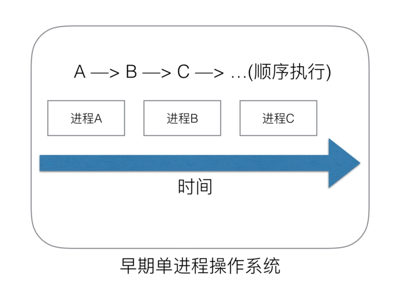
早期的单进程操作系统，面临2个问题：
- 单一的执行流程，计算机只能一个任务一个任务的处理
- 进程阻塞所带来的CPU时间浪费
那么能不能有多个进程来宏观一起来执行多个任务呢？
后来操作系统就具有了最早的并发能力： 多进程并发
当一个进程阻塞的时候，切换到另外等待执行的进程，这样就能尽量把CPU利用起来，CPU就不浪费了。
多进程/线程时代有了调度器需求
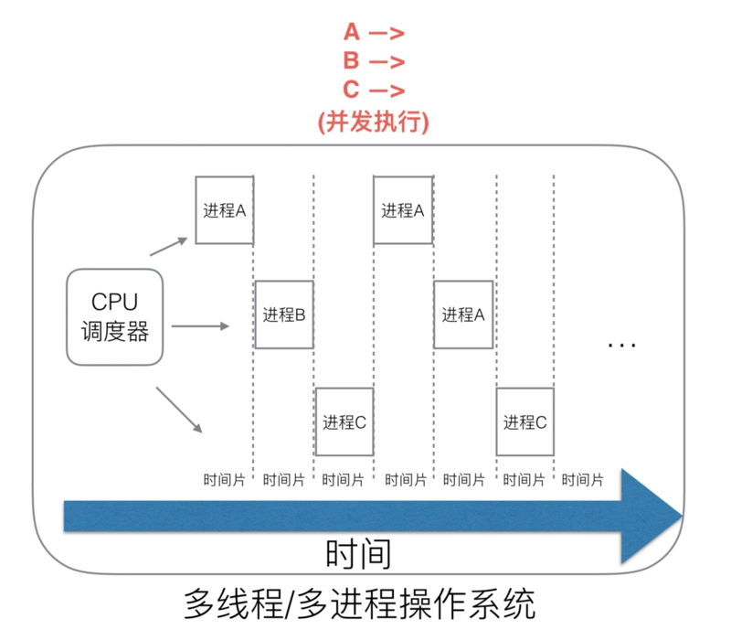
在多进程/多线程的操作系统中，就解决了阻塞的问题，因为一个进程阻塞CPU可以立刻切换到其他进程中去执行，而且调度CPU的算法可以保证在运行的进程都可以被分配到CPU的运行时间片。
这样从宏观来看，似乎多个进程是在同时被运行。
但新的问题就又出现了，进程拥有太多的资源，进程的创建、切换、销毁，都会占用很长的时间。
CPU虽然利用起来了，但如果进程过多，CPU有很大的一部分都被用来进行进程调度了。
怎么才能提高CPU的利用率呢？
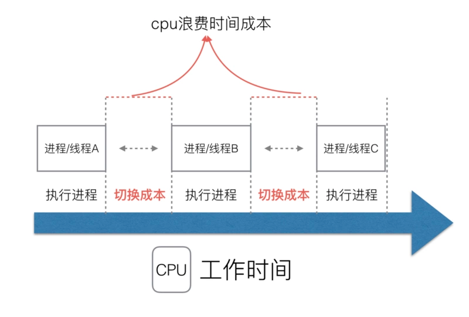
很明显，CPU调度切换的是进程和线程。
尽管线程看起来很美好，但实际上多线程开发设计会变得更加复杂，要考虑很多同步竞争等问题，如锁、竞争冲突等。
协程来提高CPU利用率
多进程、多线程已经提高了系统的并发能力。
但是在当今互联网高并发场景下，为每个任务都创建一个线程是不现实的，因为会消耗大量的内存(进程虚拟内存 会占用4GB[32位操作系统], 而线程也要大约4MB)。
大量的进程/线程出现了新的问题：
- 高内存占用
- 调度的高消耗CPU
之后，攻城狮们就发现，其实一个线程分为内核态线程和用户态线程。
一个用户态线程必须要绑定一个内核态线程
但是CPU并不知道有用户态线程的存在，它只知道它运行的是一个内核态线程(Linux的PCB进程控制块)。
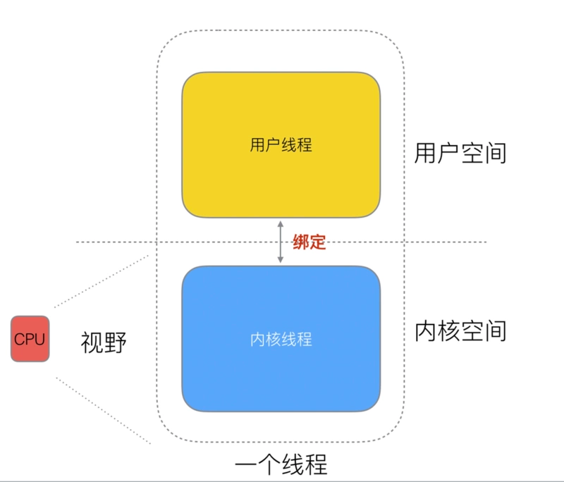
这样，我们再去细化去分类一下，内核线程依然叫线程(thread)，用户线程叫协程(co-routine).
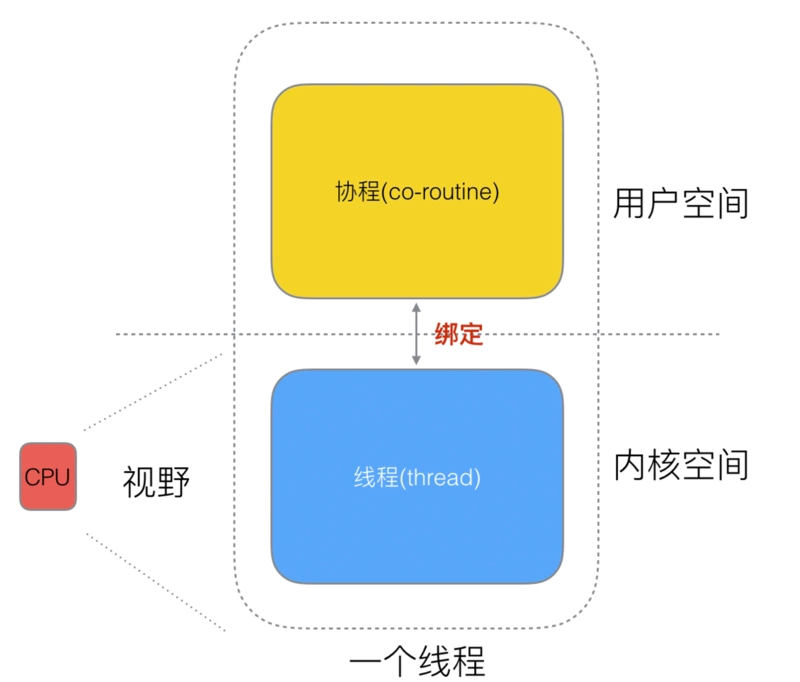
看到这里，我们就要开脑洞了，既然一个协程(co-routine)可以绑定一个线程(thread)，那么能不能多个协程(co-routine)绑定一个或者多个线程(thread)上呢。
之后，我们就看到了有3种协程和线程的映射关系
N:1 关系(N个协程绑定1个线程)
优点:
- 协程在用户态线程即完成切换，不会陷入到内核态，这种切换非常的轻量快速。
缺点： - 一个进程的所有协程都绑定在一个线程上。
- 某个程序用不了硬件的多核加速能力。
- 一旦某协程阻塞，造成线程阻塞，本进程的其他协程都无法执行了，根本就没有并发的能力了。
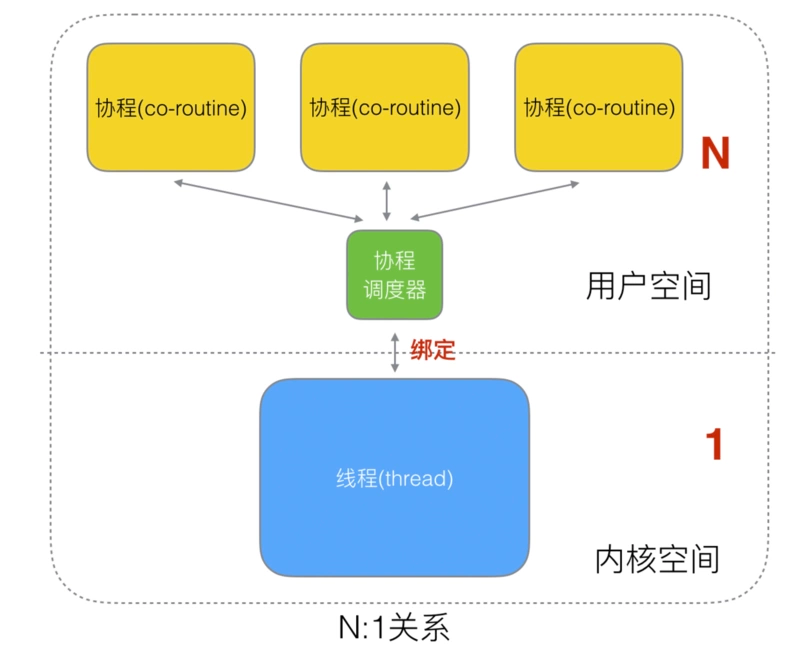
1:1 关系(1个协程绑定1个线程)
优点: 简单易于实现
缺点:
- 协程的创建、删除和切换的代价都由CPU完成，有点略显昂贵了。
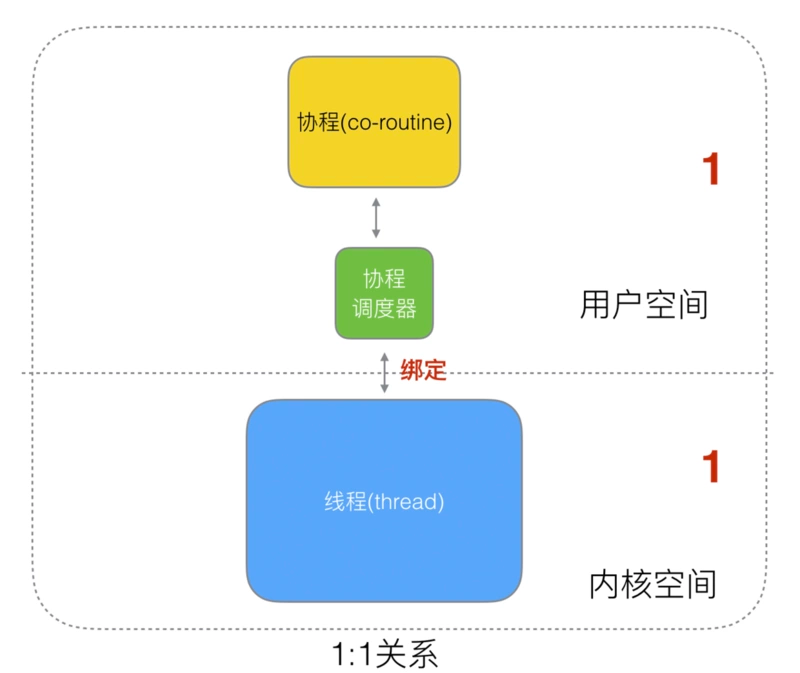
M:N关系(M个协程绑定1个线程, 是N:1和1:1类型的结合, 但是难以实现)
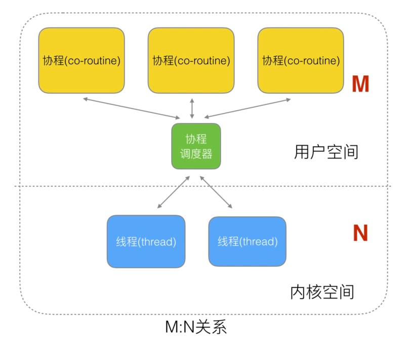
协程跟线程是有区别的，线程由CPU调度是抢占式的，协程由用户态调度是协作式的，一个协程让出CPU后，才执行下一个协程。
Go语言的协程(goroutine)
Go为了提供更容易使用的并发方法，使用了goroutine和channel。
goroutine来自协程的概念，让一组可复用的函数运行在一组线程之上，即使有协程阻塞，该线程的其他协程也可以被runtime调度，转移到其他可运行的线程上。
最关键的是，程序员看不到这些底层的细节，这就降低了编程的难度，提供了更容易的并发。
Go中，协程被称为goroutine，它非常轻量，一个goroutine只占几KB，并且这几KB就足够goroutine运行完，这就能在有限的内存空间内支持大量goroutine，支持了更多的并发。
虽然一个goroutine的栈只占几KB，但实际是可伸缩的，如果需要更多内容，runtime会自动为goroutine分配。
Goroutine特点：
- 占用内存更小（几kb）
- 调度更灵活(
runtime调度)
被废弃的goroutine调度器
既然我们知道了协程和线程的关系，那么最关键的一点就是调度协程的调度器的实现了。
Go目前使用的调度器是2012年重新设计的，因为之前的调度器性能存在问题，所以使用4年就被废弃了。
那么我们先来分析一下被废弃的调度器是如何运作的？
大部分文章都是会用G来表示Goroutine，用M来表示线程(OS Thread)，那么我们也会用这种表达的对应关系。
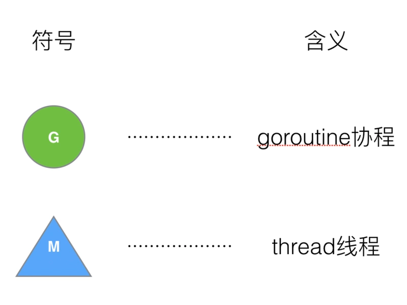
下面我们来看看被废弃的golang调度器是如何实现的
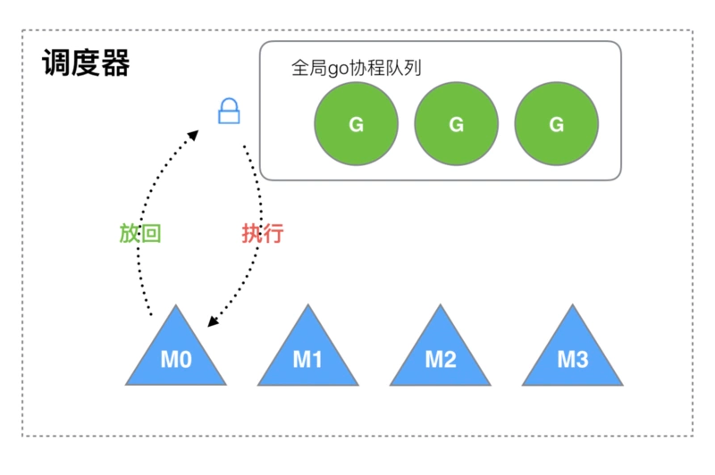M想要执行、放回G都必须访问全局G队列，并且M有多个，即多线程访问同一资源需要加锁进行保证互斥/同步，所以全局G队列是有互斥锁进行保护的。
老调度器有几个缺点：
- 创建、销毁、调度
G都需要每个M获取锁，这就形成了激烈的锁竞争。 M转移G会造成延迟和额外的系统负载。比如当G中包含创建新协程的时候，M创建了G2，为了继续执行G，需要把G2交给M2执行，也造成了很差的局部性，因为G2和G是相关的，最好放在M上执行，而不是M2上。- 系统调用(CPU在
M之间的切换)导致频繁的线程阻塞和取消阻塞操作增加了系统开销。
二、Goroutine调度器的GMP模型的设计思想
面对之前调度器的问题，Go设计了新的调度器。
在新调度器中，出列M(thread)和G(goroutine)，又引入了P(Processor)。
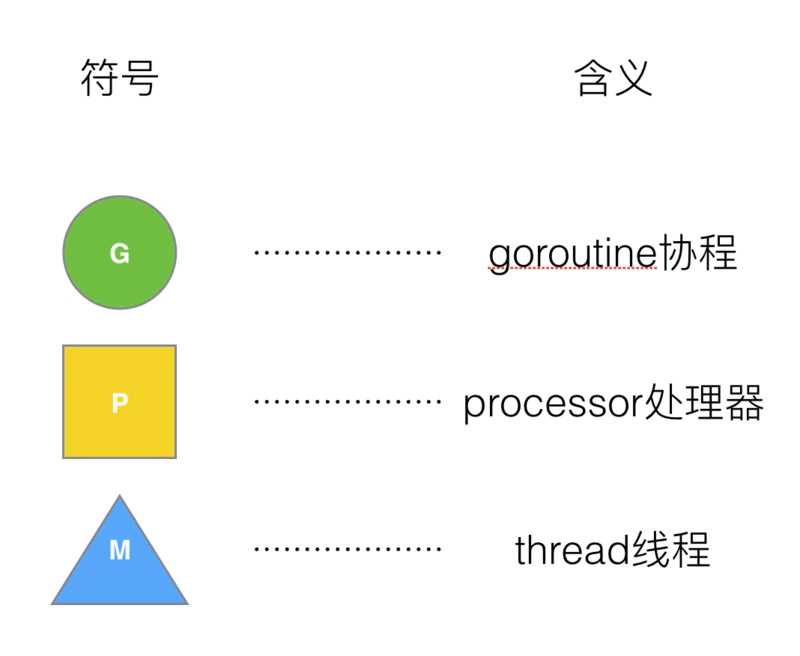
Processor包含了运行goroutine的资源，如果线程想运行goroutine，必须先获取P，P中还包含了可运行的G队列。
GMP模型
在Go中，线程是运行goroutine的实体，调度器的功能是把可运行的goroutine分配到工作线程上。
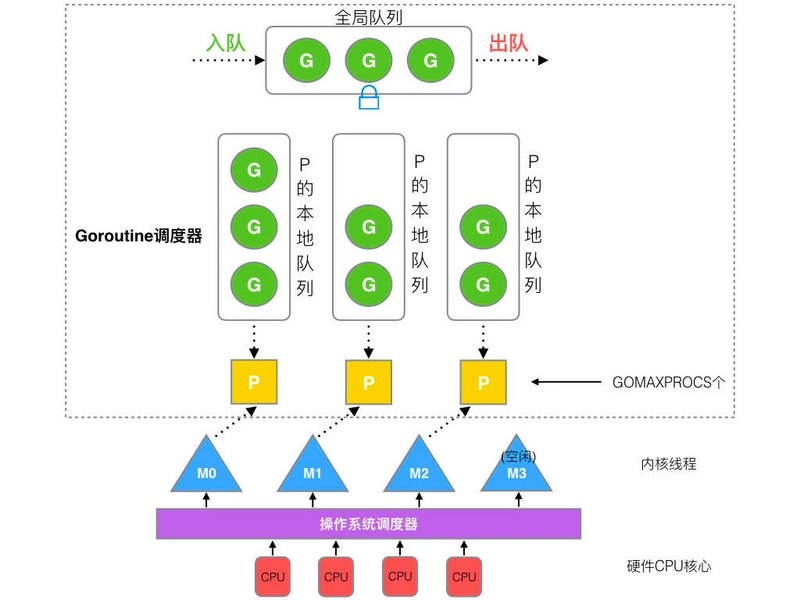
全局队列（Global Queue）：存放等待运行的G。
P的本地队列：同全局队列类似，存放的也是等待运行的G，存的数量有限，不超过256个。新建G’时，G’优先加入到P的本地队列，如果队列满了，则会把本地队列中一半的G移动到全局队列。
P列表：所有的P都在程序启动时创建，并保存在数组中，最多有GOMAXPROCS(可配置)个。
M：线程想运行任务就得获取P，从P的本地队列获取G，P队列为空时，M也会尝试从全局队列拿一批G放到P的本地队列，或从其他P的本地队列偷一半放到自己P的本地队列。M运行G，G执行之后，M会从P获取下一个G，不断重复下去。
Goroutine调度器和OS调度器是通过M结合起来的，每个M都代表了1个内核线程，OS调度器负责把内核线程分配到CPU的核上执行。
P和M的个数问题
- P的数量
- 由启动时环境变量
GOMAXPROCS或者是由runtime的方法GOMAXPROCS()决定。这意味着在程序执行的任意时刻都只有GOMAXPROCS个goroutine在同时运行。
- 由启动时环境变量
- M的数量
- go语言本身的限制：go程序启动时，会设置M的最大数量，默认10000。但是内核很难支持这么多的线程数，所以这个限制可以忽略。
runtime/debug中的SetMaxThreads函数，设置M的最大数量- 一个
M阻塞了，会创建新的MM与P的数量没有绝对关系，一个M阻塞，P就会去创建或者切换另一个M，所以，即使P的默认数量是1，也有可能会创建很多个M出来。
P和M何时会被创建
- P，在确定了
P的最大数量n后，运行时系统会根据这个数量创建n个P。 - M，没有足够的
M来关联P并运行其中的可运行的G。比如所有的M此时都阻塞住了，而P中还有很多就绪任务，就会去寻找空闲的M，而没有空闲的，就会去创建新的M。
调度器的设计策略
- 复用线程(避免频繁的创建、销毁线程，而是对线程的复用)
- work stealing机制，当本线程无可运行的
G时，尝试从其他线程绑定的P偷取G，而不是销毁线程。 - hand off机制，当本线程因为
G进行系统调用阻塞时，线程释放绑定的P，把P转移给其他空闲的线程执行。
- work stealing机制，当本线程无可运行的
- 利用并行
GOMAXPROCS设置P的数量，最多有GOMAXPROCS个线程分布在多个CPU上同时运行。GOMAXPROCS也限制了并发的程度，比如GOMAXPROCS= 核数/2，则最多利用了一半的CPU核进行并行。
- 抢占
- 在coroutine中要等待一个协程主动让出CPU才执行下一个协程，在Go中，一个goroutine最多占用CPU 10ms，防止其他goroutine被饿死，这就是goroutine不同于coroutine的一个地方。
- 全局G队列
- 在新的调度器中依然有全局
G队列，但功能已经被弱化了，当M执行work stealing从其他P偷不到G时，它可以从全局G队列获取G。
- 在新的调度器中依然有全局
go func() 调度流程
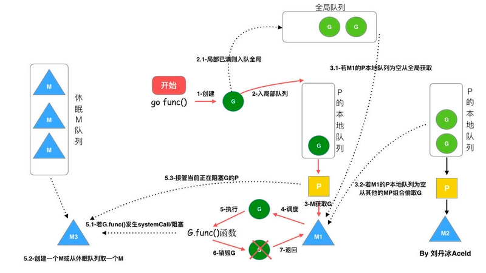
从上图我们可以分析出几个结论：
- 我们通过
go func()来创建一个goroutine； - 有两个存储
G的队列，一个是局部调度器P的本地队列、一个是全局G队列。新创建的G会先保存在P的本地队列中，如果P的本地队列已经满了就会保存在全局的队列中； G只能运行在M中，一个M必须持有一个P，M与P是1：1的关系。M会从P的本地队列弹出一个可执行状态的G来执行，如果P的本地队列为空，就会想其他的MP组合偷取一个可执行的G来执行；- 一个
M调度G执行的过程是一个循环机制； - 当
M执行某一个G时候如果发生了syscall或则其余阻塞操作，M会阻塞，如果当前有一些G在执行，runtime会把这个线程M从P中摘除(detach)，然后再创建一个新的操作系统的线程(如果有空闲的线程可用就复用空闲线程)来服务于这个P； - 当
M系统调用结束时候，这个G会尝试获取一个空闲的P执行，并放入到这个P的本地队列。如果获取不到P，那么这个线程M变成休眠状态， 加入到空闲线程中，然后这个G会被放入全局队列中。
调度器的生命周期
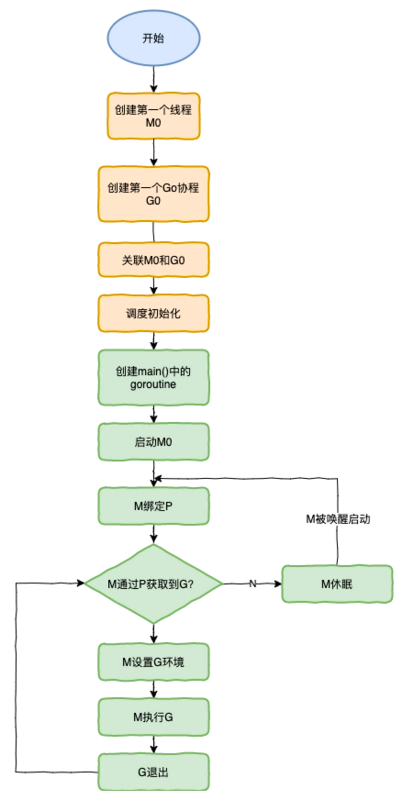
M0M0是启动程序后的编号为0的主线程，这个M对应的实例会在全局变量runtime.m0中，不需要在heap上分配，M0负责执行初始化操作和启动第一个G， 在之后M0就和其他的M一样了。
G0G0是每次启动一个M都会第一个创建的gourtine，G0仅用于负责调度的G，G0不指向任何可执行的函数, 每个M都会有一个自己的G0。在调度或系统调用时会使用G0的栈空间, 全局变量的G0是M0的G0。
我们来跟踪一段代码
1 | package main |
接下来我们来针对上面的代码对调度器里面的结构做一个分析, 也会经历如上图所示的过程：
runtime创建最初的线程M0和G0，并把两者关联。- 调度器初始化：初始化
M0、栈、垃圾回收，以及创建和初始化由GOMAXPROCS个P构成的P列表。 - 示例代码中的
main函数是main.main，runtime中也有个main函数(runtime.main)，代码经过编译后，runtime.main会调用main.main，程序启动时会为runtime.main创建goroutine，称它为main goroutine吧，然后把main goroutine加入到P的本地队列。 - 启动
M0，M0已经绑定了P，会从P的本地队列获取G，获取到main goroutine。 G拥有栈，M根据G中的栈信息和调度信息设置运行环境M运行GG退出，再次回到M获取可运行的G，这样重复下去，直到main.main退出，runtime.main执行Defer和Panic处理，或调用runtime.exit退出程序。
调度器的生命周期几乎占满了一个GO程序的一生，runtime.main的goroutine执行之前都是为调度器做准备工作，runtime.main的goroutine运行，才是调度器的真正开始，直到runtime.main结束而结束。
可视化GMP编程
有2种方式可以查看一个程序的GMP的数据
方式1：go tool trace
trace记录了运行时的信息，能提供可视化的Web页面。
简单测试代码：main函数创建trace，trace会运行在单独的goroutine中，然后main打印”Hello World”退出。
1 | package main |
运行程序
1 | $ go run trace.go |
会得到一个trace.out文件，然后我们可以用一个工具打开，来分析这个文件。
1 | $ go tool trace trace.out |
我们可以通过浏览器打开http://127.0.0.1:33479网址，点击view trace 能够看见可视化的调度流程。
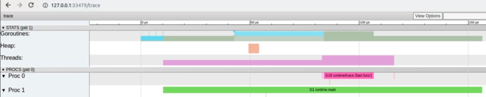
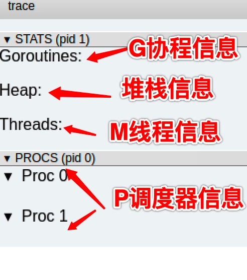
G信息：点击Goroutines那一行可视化的数据条，我们会看到一些详细的信息。
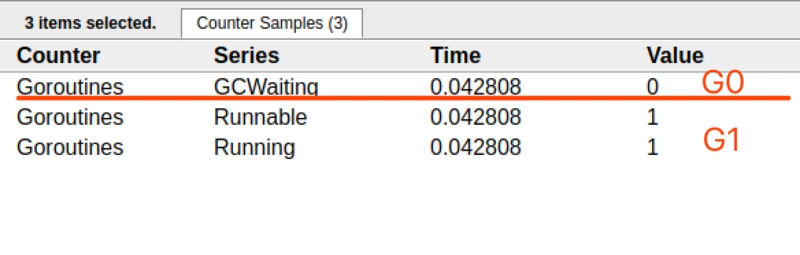
一共有两个G在程序中，一个是特殊的G0，是每个M必须有的一个初始化的G，这个我们不必讨论
其中G1应该就是main goroutine(执行main函数的协程)，在一段时间内处于可运行和运行的状态。
M信息：点击Threads那一行可视化的数据条，我们会看到一些详细的信息。
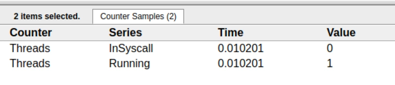
一共有两个M在程序中，一个是特殊的M0，用于初始化使用，这个我们不必讨论
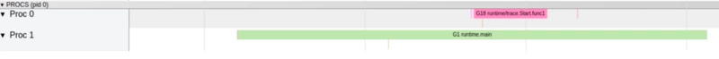
G1中调用了main.main，创建了trace goroutine G18。G1运行在P1上，G18运行在P0上。
这里有两个P，我们知道，一个P必须绑定一个M才能调度G。
我们在来看看上面的M信息。
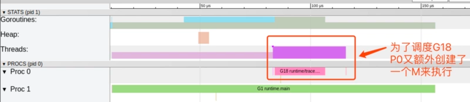
我们会发现，确实G18在P0上被运行的时候，确实在Threads行多了一个M的数据，点击查看如下：
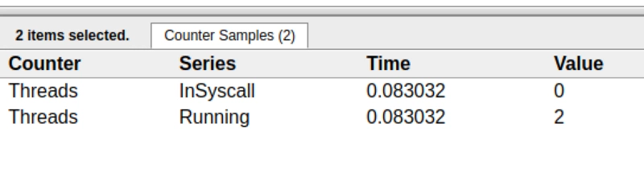
多了一个M2应该就是P0为了执行G18而动态创建的M2.
方式2：Debug trace
1 | package main |
编译
1 | $ go build trace2.go |
通过Debug方式运行
1 | $ GODEBUG=schedtrace=1000 ./trace2 |
SCHED：调试信息输出标志字符串，代表本行是goroutine调度器的输出；0ms：即从程序启动到输出这行日志的时间；gomaxprocs: P的数量，本例有2个P, 因为默认的P的属性是和cpu核心数量默认一致，当然也可以通过GOMAXPROCS来设置；idleprocs: 处于idle状态的P的数量；通过gomaxprocs和idleprocs的差值，我们就可知道执行go代码的P的数量；threads: os threads/M的数量，包含scheduler使用的m数量，加上runtime自用的类似sysmon这样的thread的数量；spinningthreads: 处于自旋状态的os thread数量；idlethread: 处于idle状态的os thread的数量；runqueue=0： Scheduler全局队列中G的数量；[0 0]: 分别为2个P的local queue中的G的数量。
三、Go调度器调度场景过程全解析
场景1
P拥有G1，M1获取P后开始运行G1，G1使用go func()创建了G2，为了局部性G2优先加入到P1的本地队列。
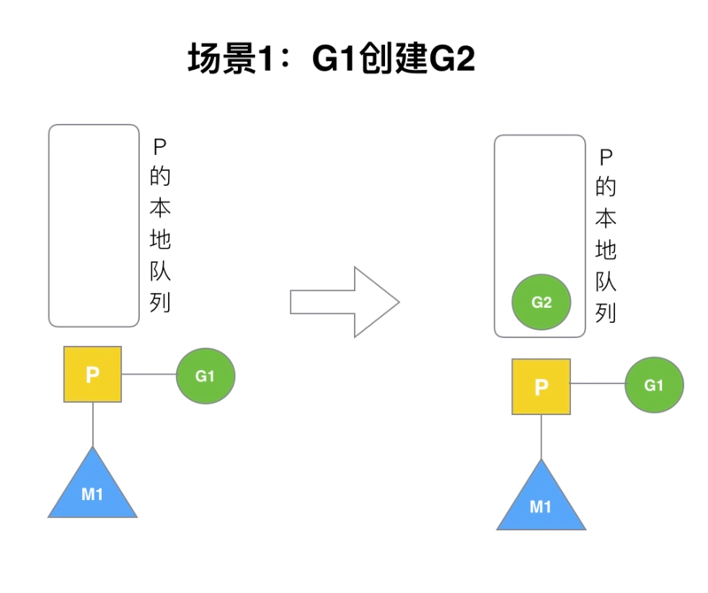
场景2
G1运行完成后(函数：goexit)，M上运行的goroutine切换为G0，G0负责调度时协程的切换（函数：schedule）。从P的本地队列取G2，从G0切换到G2，并开始运行G2(函数：execute)。实现了线程M1的复用。
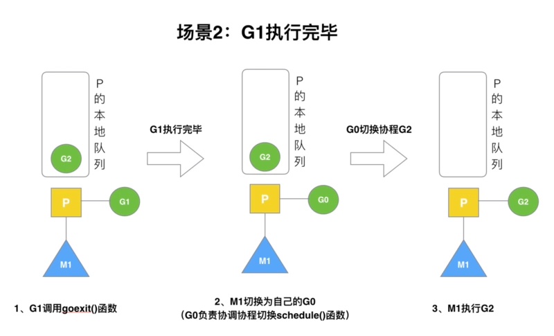
场景3
假设每个P的本地队列只能存3个G。G2要创建了6个G，前3个G（G3, G4, G5）已经加入P1的本地队列，P1本地队列满了。
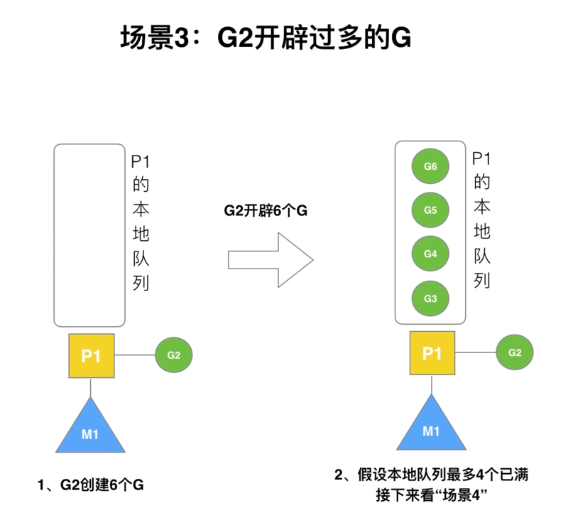
场景4
G2在创建G7的时候，发现P1的本地队列已满，需要执行负载均衡(把P1中本地队列中前一半的G，还有新创建G转移到全局队列)
实现中并不一定是新的G，如果G是G2之后就执行的，会被保存在本地队列，利用某个老的G替换新G加入全局队列
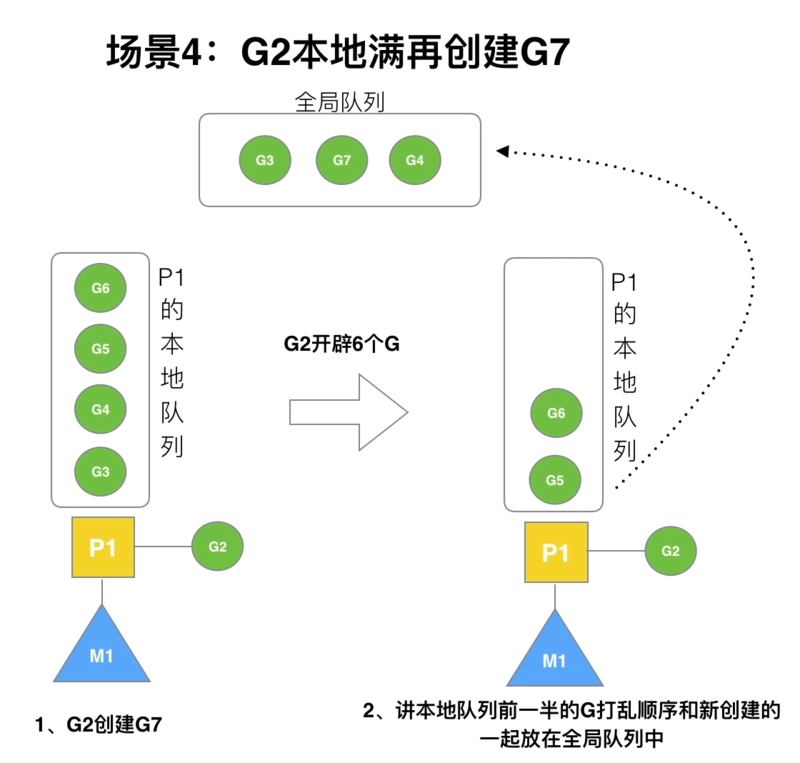
这些G被转移到全局队列时，会被打乱顺序。所以G3,G4,G7被转移到全局队列。
场景5
G2创建G8时，P1的本地队列未满，所以G8会被加入到P1的本地队列。
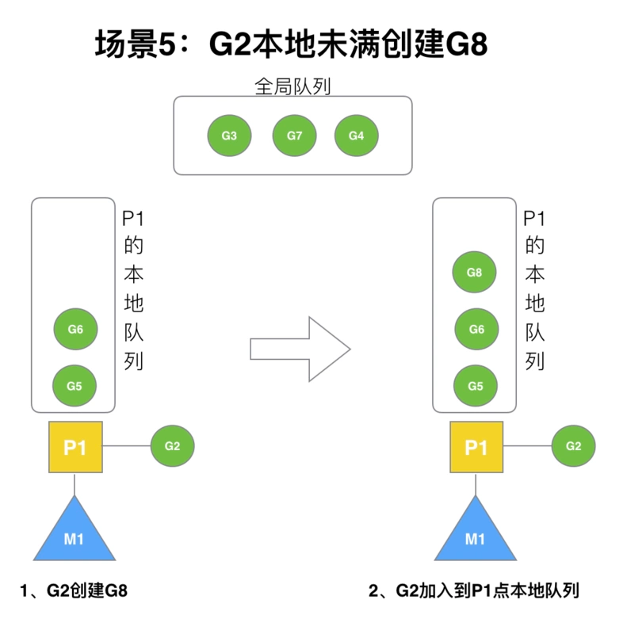
G8加入到P1点本地队列的原因还是因为P1此时在与M1绑定，而G2此时是M1在执行。所以G2创建的新的G会优先放置到自己的M绑定的P上。
场景6
规定：在创建G时，运行的G会尝试唤醒其他空闲的P和M组合去执行。
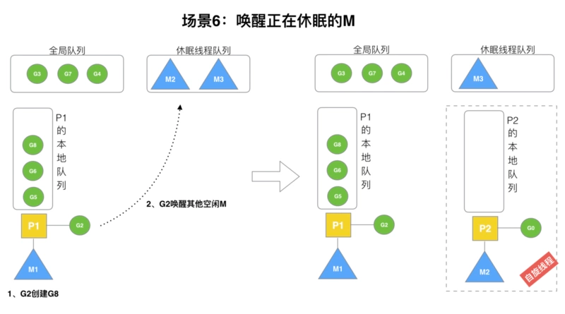
假定G2唤醒了M2，M2绑定了P2，并运行G0，但P2本地队列没有G，M2此时为自旋线程（没有G但为运行状态的线程，不断寻找G）。
场景7
M2尝试从全局队列(简称“GQ”)取一批G放到P2的本地队列（函数：findrunnable()）。
M2从全局队列取的G数量符合下面的公式：n = min(len(GQ)/GOMAXPROCS + 1, len(GQ/2))
至少从全局队列取1个G，但每次不要从全局队列移动太多的G到P本地队列，给其他P留点。这是从全局队列到P本地队列的负载均衡。
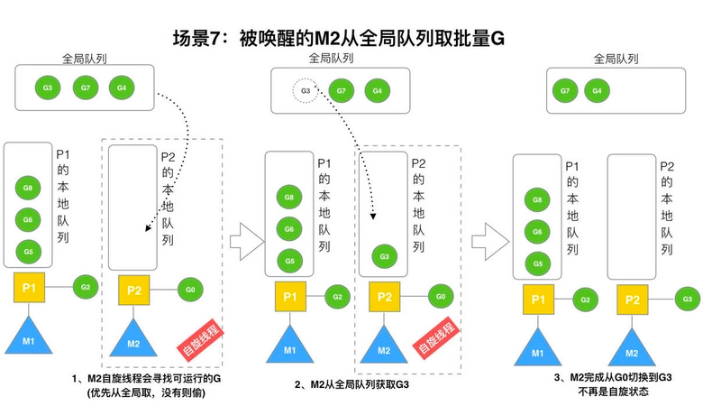
假定我们场景中一共有4个P（GOMAXPROCS设置为4，那么我们允许最多就能用4个P来供M使用）。所以M2只从能从全局队列取1个G（即G3）移动P2本地队列，然后完成从G0到G3的切换，运行G3。
场景8
假设G2一直在M1上运行，经过2轮后，M2已经把G7、G4从全局队列获取到了P2的本地队列并完成运行，全局队列和P2的本地队列都空了,如场景8图的左半部分。
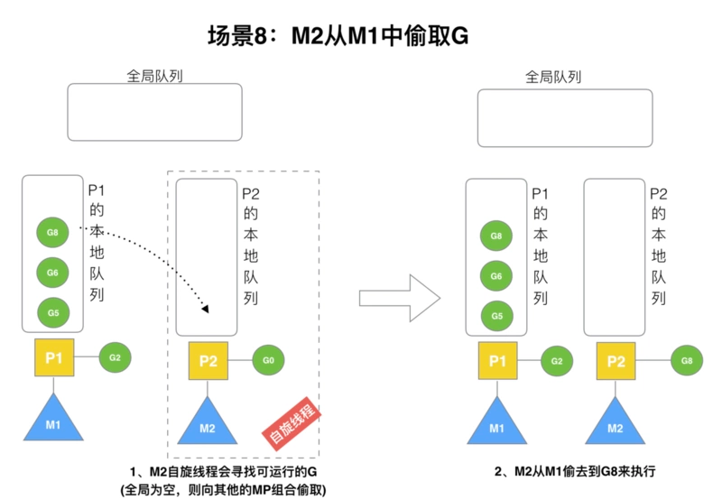
全局队列已经没有G，那m就要执行work stealing(偷取)：从其他有G的P哪里偷取一半G过来，放到自己的P本地队列。P2从P1的本地队列尾部取一半的G，本例中一半则只有1个G8，放到P2的本地队列并执行。
场景9
G1本地队列G5、G6已经被其他M偷走并运行完成，当前M1和M2分别在运行G2和G8，M3和M4没有goroutine可以运行，M3和M4处于自旋状态，它们不断寻找goroutine。
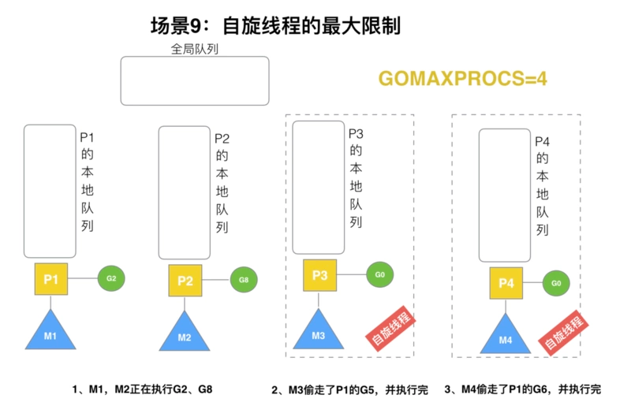
为什么要让M3和M4自旋，自旋本质是在运行，线程在运行却没有执行G，就变成了浪费CPU。
为什么不销毁现场，来节约CPU资源。
因为创建和销毁CPU也会浪费时间，我们希望当有新goroutine创建时，立刻能有M运行它，如果销毁再新建就增加了时延，降低了效率。
当然也考虑了过多的自旋线程是浪费CPU，所以系统中最多有GOMAXPROCS个自旋的线程(当前例子中的GOMAXPROCS=4，所以一共4个P)，多余的没事做线程会让他们休眠。
场景10
假定当前除了M3和M4为自旋线程，还有M5和M6为空闲的线程(没有得到P的绑定，注意我们这里最多就只能够存在4个P，所以P的数量应该永远是M>=P, 大部分都是M在抢占需要运行的P)，
G8创建了G9，G8进行了阻塞的系统调用，M2和P2立即解绑，
P2会执行以下判断：如果P2本地队列有G、全局队列有G或有空闲的M，P2都会立马唤醒1个M和它绑定，否则P2则会加入到空闲P列表，等待M来获取可用的p。
本场景中，P2本地队列有G9，可以和其他空闲的线程M5绑定。
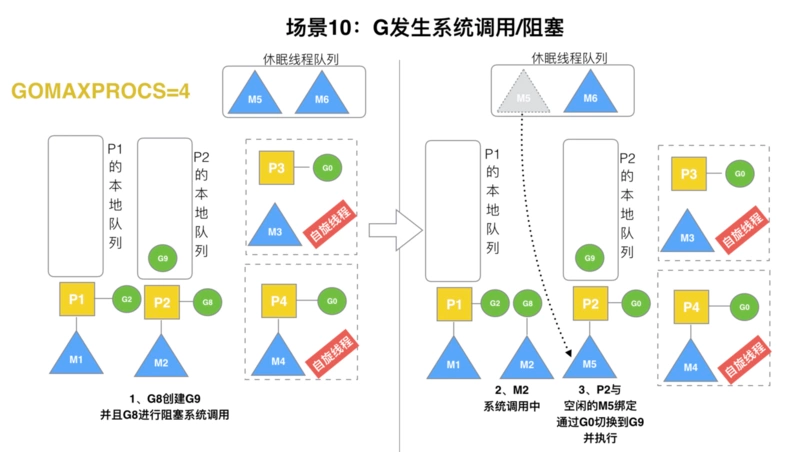
场景11
G8创建了G9，假如G8进行了非阻塞系统调用。
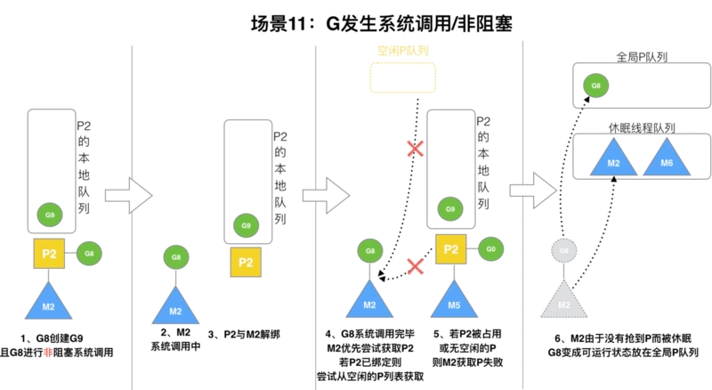
M2和P2会解绑，但M2会记住P2，然后G8和M2进入系统调用状态。
当G8和M2退出系统调用时，会尝试获取P2，如果无法获取，则获取空闲的P，
如果依然没有，G8会被记为可运行状态，并加入到全局队列,M2因为没有P的绑定而变成休眠状态(长时间休眠等待GC回收销毁)。
总结
Go调度器很轻量也很简单，足以撑起goroutine的调度工作，并且让Go具有了原生（强大）并发的能力。
Go调度本质是把大量的goroutine分配到少量线程上去执行，并利用多核并行，实现更强大的并发。
相关好博客推荐
- Scheduling In Go: Part I - OS Scheduler
- Scheduling In Go : Part II - Go Scheduler
- Scheduling In Go : Part III - Concurrency
原文作者: 刘丹冰 Aceld
原文地址: Golang三色标记、混合写屏障GC模式图文全分析